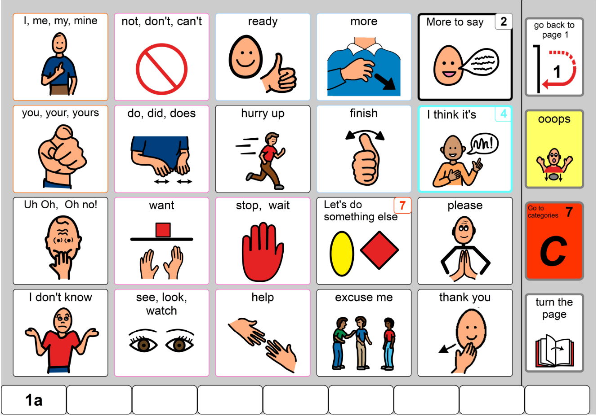
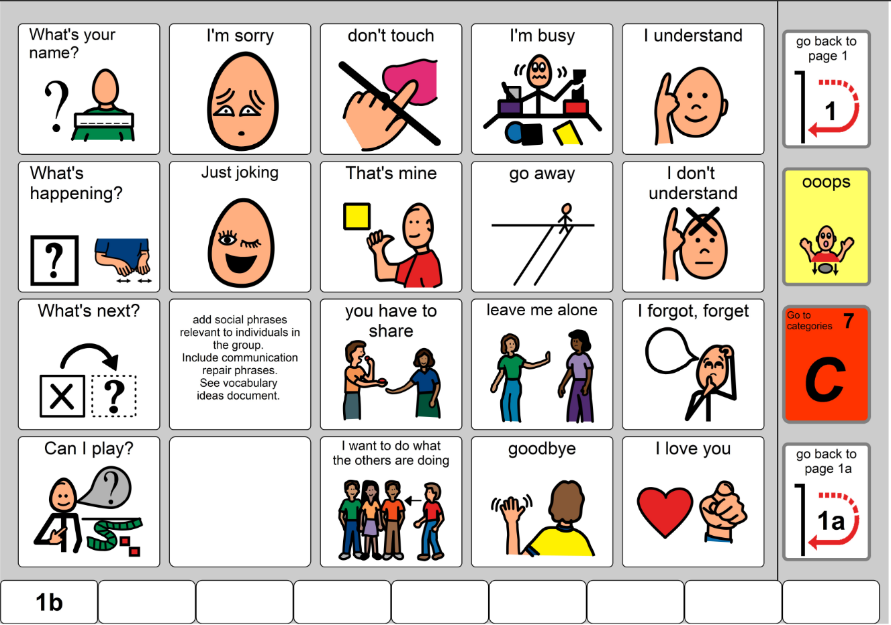
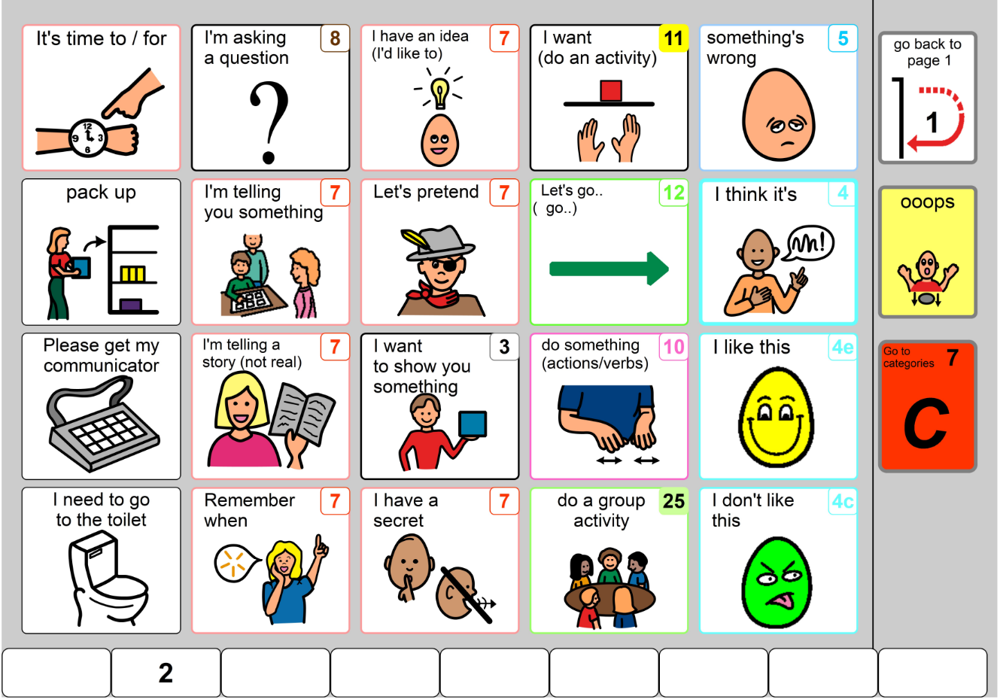
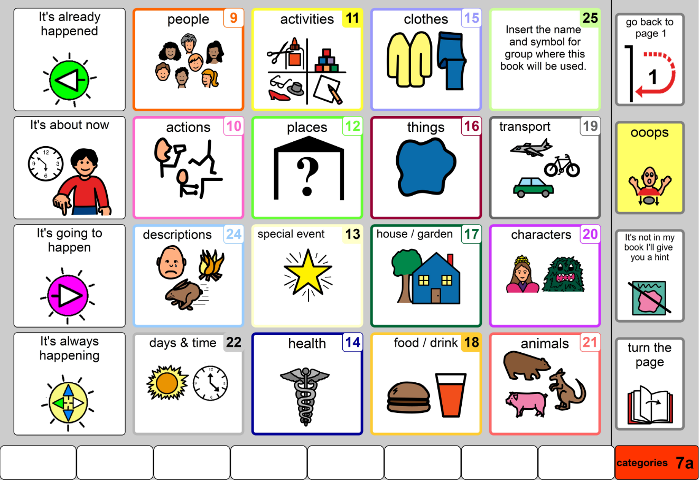

You'll be given 5 real-life scenarios. Navigate the PODD book and tap a symbol that would be relevant to say in each situation. There may be more than one right answer!
💡 Tip: tap the ▼ button in the corner to collapse this panel if it's in the way.